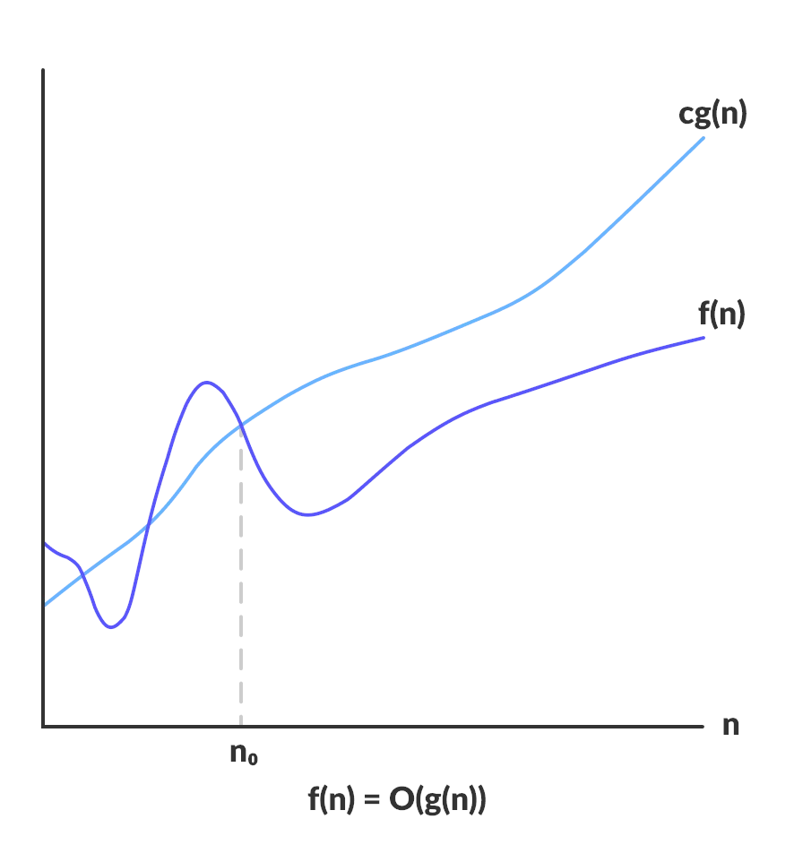
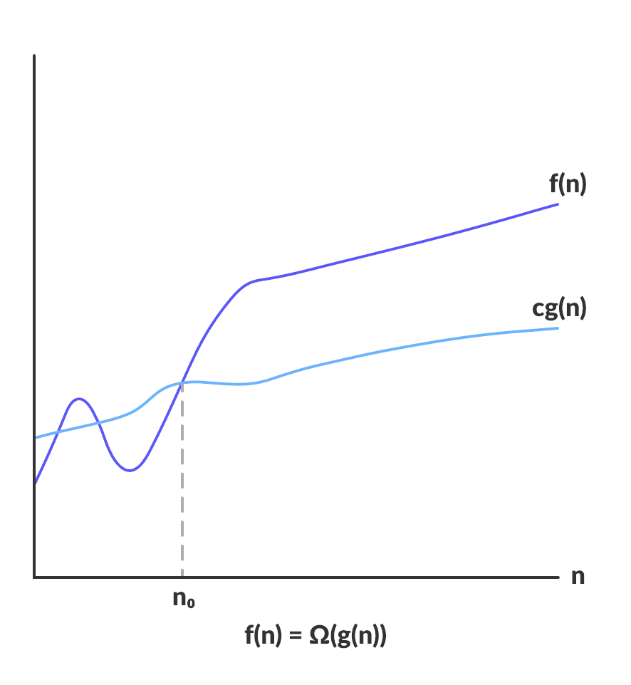

ELO320 - Estructuras de Datos y Algoritmos
Complejidad Algorítmica
Marie González-Inostroza
Análisis de Complejidad
Tiempo de ejecución de un Algoritmo
Definiremos $T(n)$ como la función de tiempo de ejecución de un algoritmo con input $n$, y la expresaremos en función a la cantidad de instrucciones.
Costo de las operaciones en unidades de tiempo [ut]:
- Instrucciones básicas: $1$
- Secuencia de $n$ instrucciones: $c \times n = n$ (c: cte. de costo)
- if-else: $T(\text{condición}) + \text{max}\{T(\text{if}), T(\text{else})\}$
- while: $(n+1) \times T(\text{condición}) + n \times T(\text{while}) $
Ejemplo de tiempo de ejecución
1 int suma(int n) {
2 int sum = 0, i, j;
3 for (i=0; i < n; i++)
4 for (j=0; j < n; j++)
5 sum++;
6 return sum;
7 }
- Orden del número de iteraciones: $n^2$.
- Costo L.2: 3.
- Costo for (L.3, L.4): $1+(n+1)+n = 2n+2$.
- Costo L.5: 1.
- Costo L.6: 1.
- Costo for interno (L.4 + L.5): $2n+2+ (n \times 1) = 3n+2$.
- Costo de doble for (L.3 + L.4 + L.5): $(2n+2) + n \times (3n+2) = 3n^2 + 4n + 2$.
- Costo total: $3n^2 + 4n + 6$.
1 int suma(int n) {
2 int sum = 0, i, j;
3 for (i=0; i < n; i++)
4 for (j=0; j < n; j++)
5 sum++;
6 return sum;
7 }
- Costo L.2: 3.
- Costo for (L.3, L.4): $1+(n+1)+n = 2n+2$.
- Costo L.5: 1.
- Costo L.6: 1.
Análisis Asintótico
Determinar el término predominante en $T(n)$, y luego encontrar cotas de rendimiento.
Existen tres notaciones asintóticas:
- Big O ($\mathcal{O}$): Cota superior asintótica (peor desempeño).
- Big Omega ($\Omega$): Cota inferior asintótica ( mejor desempeño).
- Big Theta ($\Theta$): Cota compuesta (rendimiento promedio).
Comúnmente, se utiliza la notación en peor escenario: Big O ($\mathcal{O}$).
Análisis Asintótico: Big O ($\mathcal{O}$)
Cota asintótica que limita el peor desempeño de un algoritmo.

Sean $f$ y $g$ dos funciones en $\mathbb{R}$, diremos que:
Donde:
Análisis Asintótico: Big Omega ($\Omega$)
Cota asintótica que limita el mejor desempeño de un algoritmo.

Big Omega ($\Omega$) (ejemplo)
Sean $f$ y $g$ dos funciones en $\mathbb{R}$, diremos que:
Donde:
Análisis Asintótico
¿Cuál es la complejidad del siguiente algoritmo
1 int suma(int n) {
2 int sum = 0, i, j;
3 for (i=0; i < n; i++)
4 for (j=0; j < n; j++)
5 sum++;
6 return sum;
7 }- Costo total $f(n) = 3n^2 + 4n + 6 $.
- $g(n) = n^2$, término del grado superior.
- Cota superior:
suma$= \mathcal{O}(n^2) \rightarrow f(n) \leq 10 \times g(n) $ - Cota inferior:
suma$= \Omega(n^2) \rightarrow 1 \times g(n) \leq f(n) $ - Cota promedio:
suma$= \Theta(n^2) \rightarrow 1 \times g(n) \leq f(n) \leq 10 \times g(n)$
Análisis Asintótico

Clases de Notación Big O y Escalabilidad
| Clase | Notación | Escalabilidad | $n=10$ | $n=100$ | $n=1000$ | $n=10000$ |
|---|---|---|---|---|---|---|
| Constante | $\mathcal{O}(1)$ | Tiempo fijo (independiente de $n$). | 1 | 1 | 1 | 1 |
| Logarítmica | $\mathcal{O}(\log n)$ | Tasa de crecimiento muy lenta. | 3.32 | 6.64 | 9.97 | 13.29 |
| Lineal | $\mathcal{O}(n)$ | Crecimiento proporcional a $n$. | 10 | 100 | 1000 | 10000 |
| Log-Lineal | $\mathcal{O}(n \log n)$ | Crecimiento eficiente (óptimo para ordenamiento). | 33.2 | 664 | 9970 | 132,900 |
| Cuadrática | $\mathcal{O}(n^2)$ | Crecimiento al cuadrado (lento para $n$ grande). | 100 | 10,000 | $10^6$ | $10^8$ |
| Cúbica | $\mathcal{O}(n^3)$ | Crecimiento al cubo (solo útil para $n$ muy pequeño). | 1,000 | $10^6$ | $10^9$ | $10^{12}$ |
| Exponencial | $\mathcal{O}(2^n)$ | Crecimiento explosivo (solo factible para $n \leq 40$). | 1,024 | Inviable | Inviable | Inviable |
| Factorial | $\mathcal{O}(n!)$ | Crecimiento extremo (computacionalmente intratable). | $3.6 \times 10^6$ | Inviable | Inviable | Inviable |
Actividad 15: Comparación de tiempos de ejecución
En Aragorn, clona y compila el código base para comparar lostiempo de ejecución. https://classroom.github.com/a/p8kptyI8